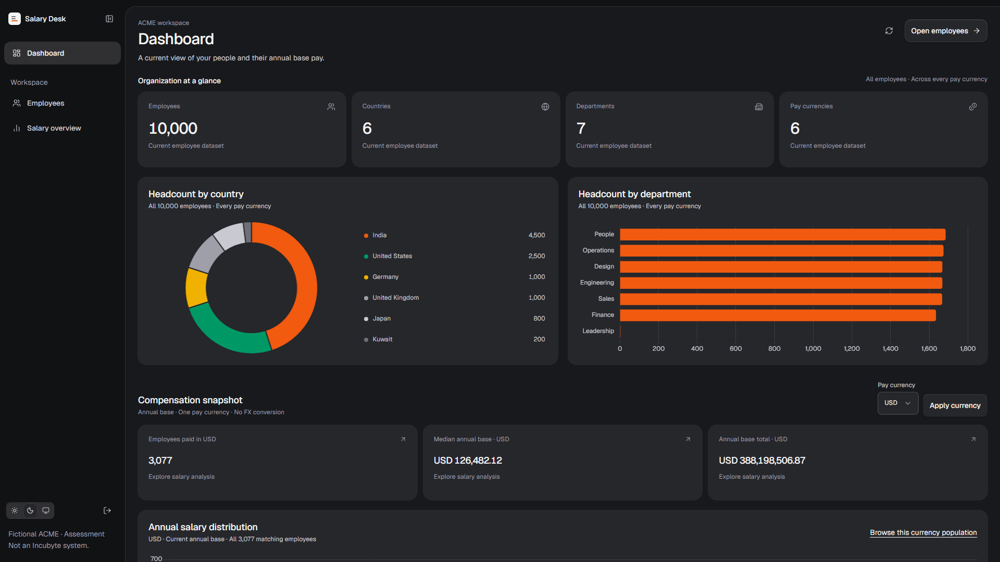
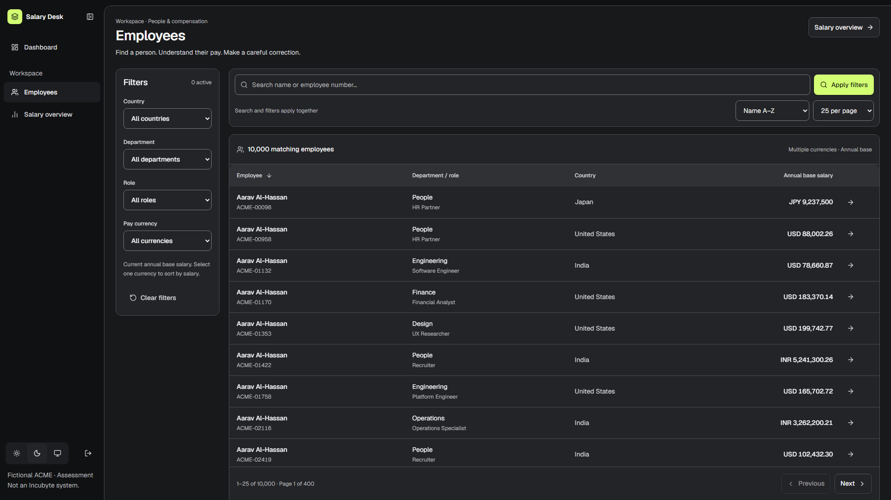
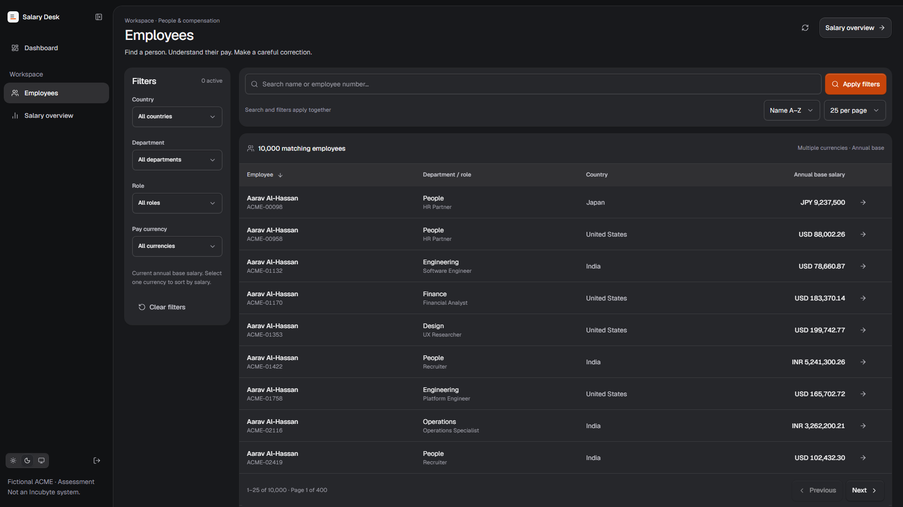
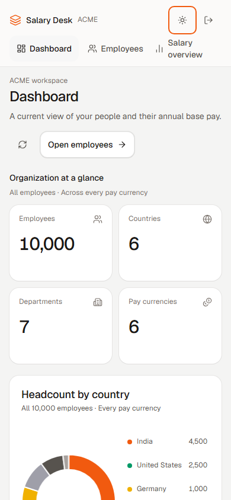
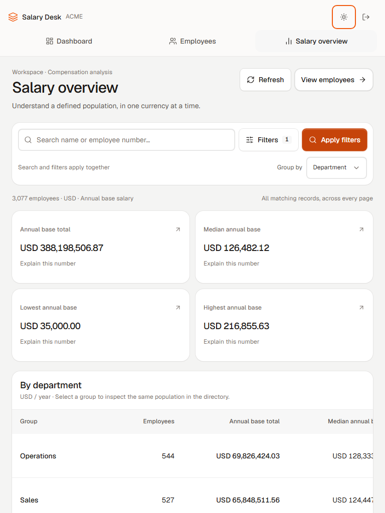
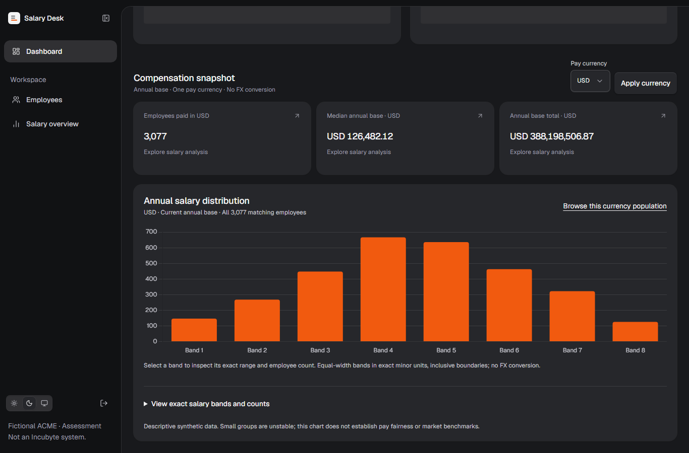
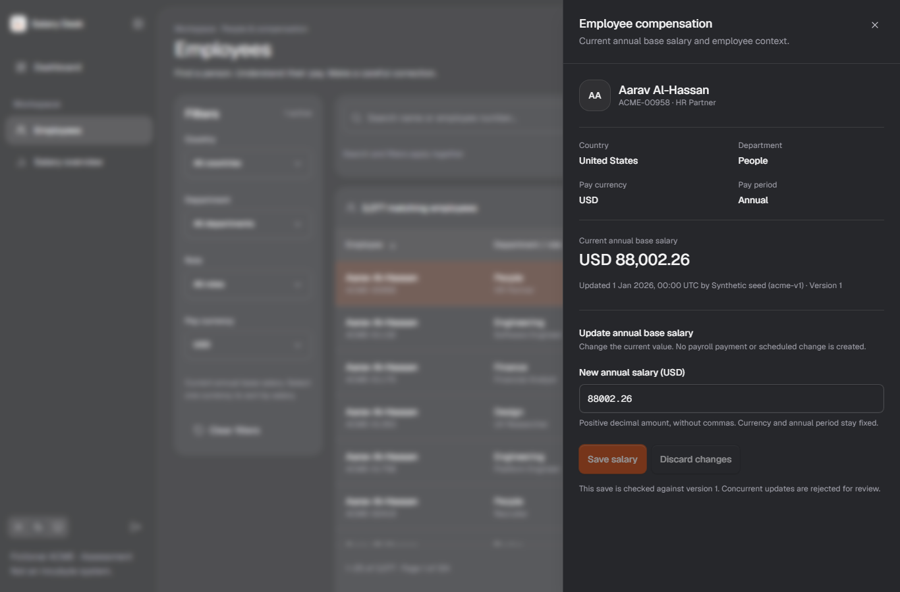
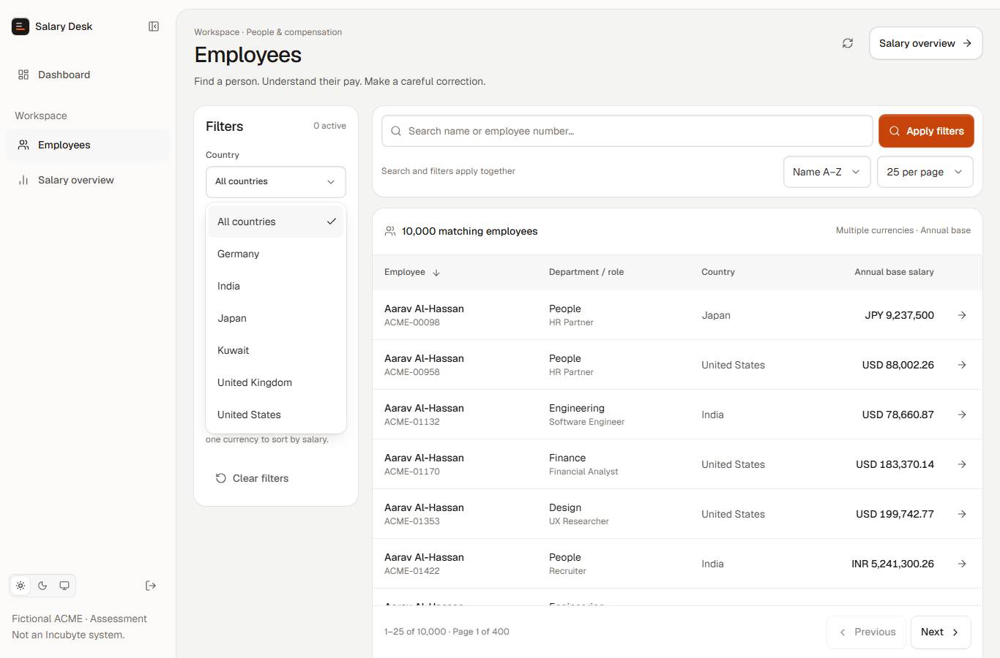
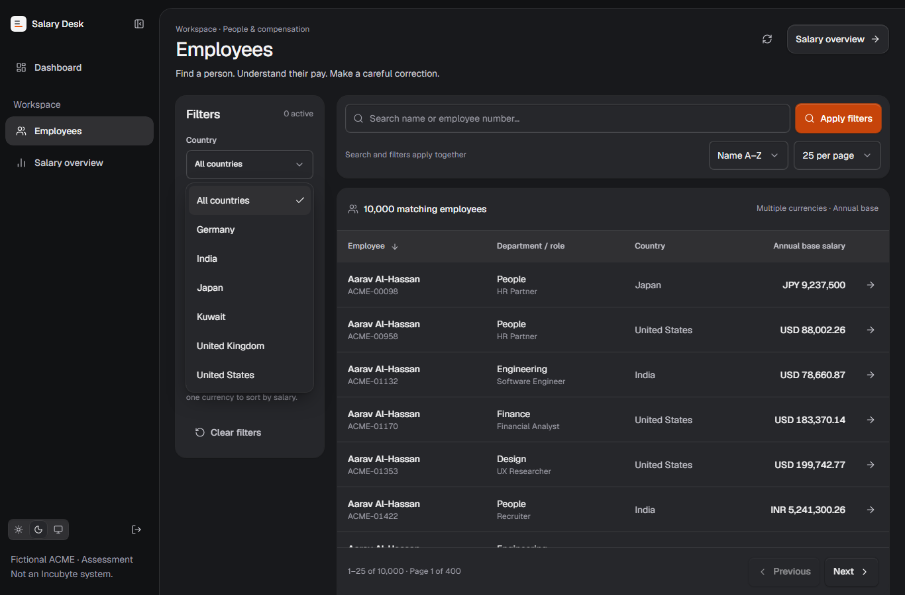

Dashboard: before / after



Locked Job Desk foundation. Local review 406b4e2. Production unchanged. Equal headcount cards, right-side country legend, compact theme well, square inner table headers and four financial metrics.









n=3, localhost production build and isolated India-to-US hosted test DB. Median shown; raw artifacts retain ranges and first-process slow samples. True Neon cold start and deployed latency remain unverified.
| Journey | Before median ms | After median ms |
|---|---|---|
| first-dashboard | 2517 | 1159 |
| dashboard-employees | 2434 | 918 |
| employees-overview | 1911 | 914 |
| return-employees | 1889 | 65 |
| browser-back | 1872 | 18 |
| browser-forward | 1881 | 19 |
| apply-filter | 1942 | 685 |
| next-page | 1878 | 867 |
| employee-detail | 871 | 874 |
35 unit / 12 PostgreSQL / 21 browser checks; 30 viewport/theme cases. Public source/production remain unchanged. Final candidate narrated video and review release remain pending.